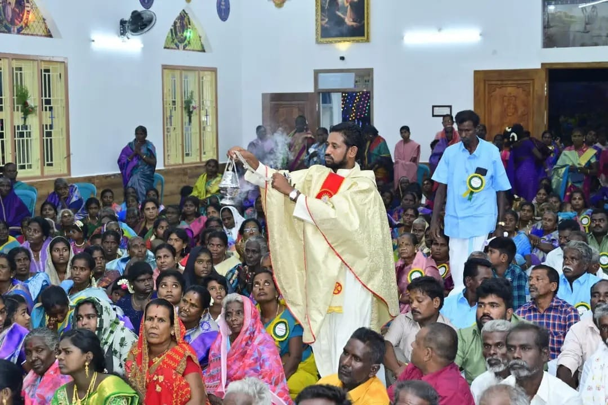

ஏ.ஆர். மங்களம் கிராமத்தில் ஆன்மீக ஒளியாய் விளங்கும் அருள்மிகு புனித அந்தோனியார் திருத்தலத்திற்கு உங்களை அன்போடு வரவேற்கிறோம்.
ஏ.ஆர். மங்களம் கிராமத்தில் ஆங்கிலேயர் காலத்திற்குப் பிறகு ஆரம்பிக்கப்பட்ட ஒரு சிறிய ஆலயம், இன்று இப்பகுதி மக்களின் நம்பிக்கையின் அடையாளமாகவும், வேண்டியதை நிறைவேற்றும் அருள்மிகு புனித அந்தோனியார் திருத்தலமாகவும் விஸ்வரூபம் எடுத்துள்ளது.
ஏ.ஆர். மங்களம் பங்குத் திருத்தலமானது வரலாற்று சிறப்புமிக்க 'நார்பர்ட்டைன் சபை' ஆன்மீகப் பாரம்பரியத்தைச் சார்ந்த அருள்மிகு திருத்தலமாகும். இத்திருத்தலத்தில் புனித அந்தோனியாரின் அற்புதத் திருவுருவச் சொரூபமும், அருள்மிகு நற்கருணை பீடமும் பக்தர்களுக்கு ஆசீர்வாதமாகத் திகழ்கிறது.
பங்கு மக்களின் ஆன்மீக வளர்ச்சிக்கும் ஆலயப் பணிகளுக்கும் வழிகாட்டும் தற்போதைய பங்குத் தந்தை.

ஏ.ஆர். மங்களம் புதிய அழகிய தேவாலயத்தைக் கட்டி ஆன்மீக விஸ்வரூபம் பெற அரும்பணியாற்றியவர்.
"நான் உங்களுக்குக் கட்டளையிட்டது போல, நீங்கள் ஒருவர் மற்றவரிடம் அன்பு செலுத்துங்கள்."
- யோவான் 15:12நீங்கள் இங்கு சமர்ப்பிக்கும் விண்ணப்பங்கள் மற்றும் மன்றாட்டுகள் நேரடியாக பங்குத் தளத்தின் அதிகாரப்பூர்வ மின்னஞ்சல் raj85piyo@gmail.com மற்றும் வாட்ஸ்அப் எண் +91 6382183062 மூலமாகப் பெறப்படும்.